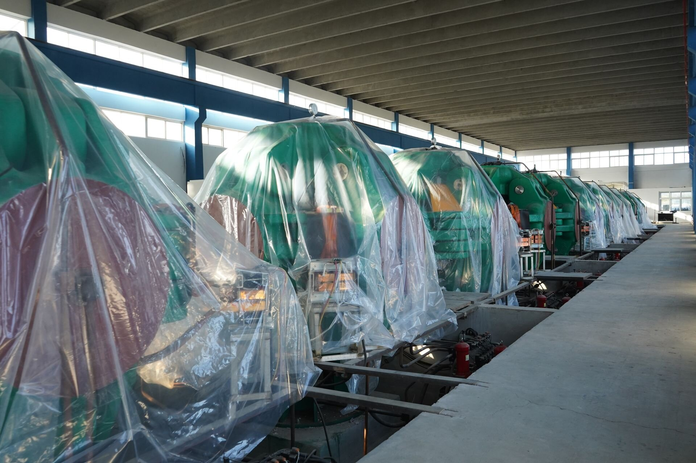
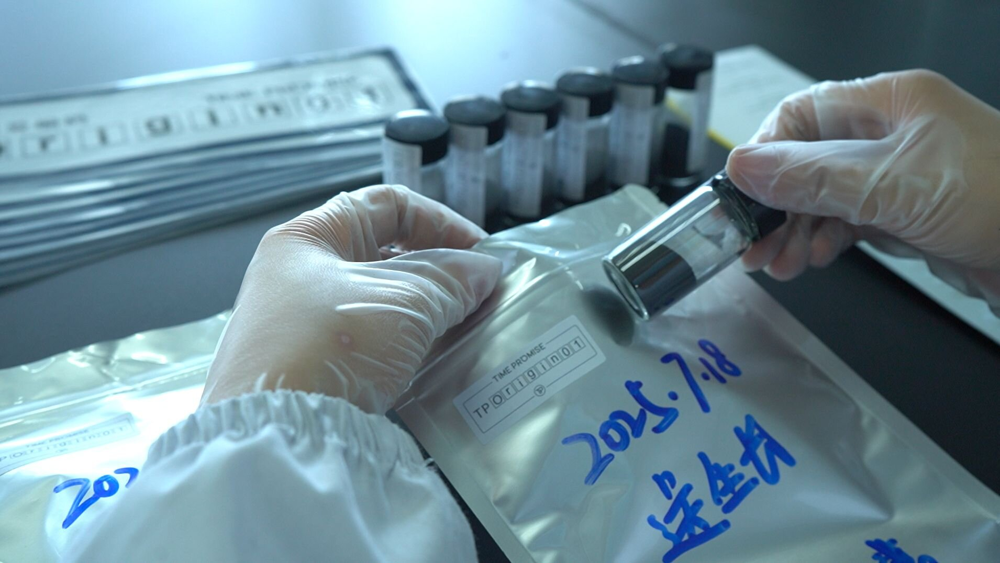

Quick answer
Evaluate a memorial diamond supplier on six criteria: production timeline, carbon provenance, color-grade consistency, white-label capability, compliance and certification, and returns / remake policy. Against these, BioGem Lab's disclosed standards are a 60-day turnaround (18–25 days of which is HPHT growth), CCIC-based third-party traceability, an honest E–H color range on colorless-only stones, and patented carbon-extraction technology (ZL 201010565778.9). The single best test of any supplier is whether they will state these numbers in writing before you place an order.
For a pet cremation or aftercare business, adding memorial diamonds to your product line is one of the highest-margin, highest-emotion decisions you will make. It is also one of the easiest to get wrong. The product is manufactured hundreds or thousands of miles away, from a material — your client's pet's hair — that cannot be replaced if it is mishandled. When it works, you deliver a wearable heirloom that deepens client loyalty for years. When it fails, you inherit a grieving customer, a lost sample, and a reputation problem that no refund repairs.
The North American pet aftercare market has made this decision worth taking seriously. Grand View Research values North American pet funeral services at roughly USD 670 million in 2024, growing at about 9.7% annually toward 2033, with cremation accounting for close to 80% of that segment. Roughly two in three U.S. households own a pet (APPA 2023–2024), and surveys consistently find that around 40% of owners purchase at least one memorial product after a loss. The demand is real. The question is not whether to offer a keepsake diamond, but whom to trust to make it.
This guide is written from the manufacturing side of that relationship. It reflects the questions our own partners ask before they commit — a Romanian OEM buyer, a Luxembourg-based memorial house, a Japanese aftercare operator, an Indian direct-to-consumer brand — and the failure modes we see across the industry. It is deliberately unsentimental. You are making a supply-chain decision; treat it like one.
The decision framework: six criteria that matter
Marketing pages will tell you every supplier is "the most trusted" and every diamond is "made from love." None of that is procurable. What you can actually evaluate reduces to six measurable criteria. The rest of this guide takes each one in turn, gives you the industry benchmark, states the BioGem Lab standard, and names the warning signs.
| Criterion | What you are really testing | BioGem Lab standard |
|---|---|---|
| 1. Timeline | Cash flow & client expectation control | 60 days ex-works |
| 2. Provenance | Can they prove your sample was used? | CCIC third-party chain of custody |
| 3. Color | Consistency & honesty of grading | E–H quoted; D–F actual output |
| 4. White-label | Does your brand stay front and center? | Full white-label + OEM |
| 5. Certification | Independent, verifiable grading | CCIC default; IGI/GIA upgrade |
| 6. After-sales | Who absorbs a remake? | Defined remake policy |
1. Production timeline: the 60-day reality
Timeline is the first thing to test because it is the criterion that most directly controls your business. Every week between order and delivery is a week your client is waiting, your capital is committed, and your reputation is exposed. A grieving pet owner who was promised a diamond "in a few months" and hears nothing at month five will call you, not the factory.
The memorial diamond industry runs slow. Surveying the published turnaround claims of the major players in 2026, the range is wide: LONITÉ and Eterneva quote toward 7–12 months, Algordanza and Saint Diamond cluster around 4–9 months, and Heart In Diamond advertises an unusually fast 70–120 days. Most established laboratories sit in the 4 to 10 month band. Independent verification of any of these figures is scarce — nearly all are vendor marketing claims — so treat a quoted timeline as a promise to be tested, not a fact.
Against that backdrop, BioGem Lab's standard is 60 days from receipt of the biological carbon sample to ex-works delivery in Shenzhen, with international courier transit adding a further 3–10 days. That figure is not a marketing round number; it is the sum of a controlled, in-house process:
| Stage | Duration | What happens |
|---|---|---|
| Carbon extraction | 3–5 days | Thermal decomposition of hair/fur |
| Purification | 5–7 days | Carbon refined to 99.95%+ |
| Graphitization | 7–10 days | Conversion to crystalline graphite |
| HPHT growth | 18–25 days | 5.5 GPa / 1,450°C, one stone per cell |
| Cutting & polishing | 7–10 days | Round brilliant, ideal cut |
| Grading & certificate | 5–7 days | CCIC by default; IGI/GIA on request |
The HPHT growth stage — 18 to 25 days — is the physically irreducible core. A diamond grown at 5.5 gigapascals and 1,450 degrees Celsius takes the time it takes; there is no honest way to compress crystal growth. What separates a 60-day supplier from a 10-month one is not a faster press. It is whether the surrounding stages — extraction, purification, graphitization, cutting, certification — are run in-house on a controlled schedule or subcontracted out and queued behind other clients' work.

Figure 1: An owned HPHT press fleet is what makes a firm 60-day timeline possible. Each press grows one memorial diamond at a time — capacity, not chemistry, is the constraint most suppliers hide.
The test: Ask for the average and the maximum production time over the supplier's last twelve months, and ask them to break the total into stages. A supplier who owns the process can do this in one email. A supplier who cannot give you a firm number, or who answers only with a vague "a few months," is almost certainly reselling or outsourcing — which means your timeline is hostage to a queue you cannot see.
2. Carbon provenance: what "traceability" actually means
This is the criterion the industry is least honest about, and the one your clients care about most. The entire emotional premise of a memorial diamond is that this stone came from my pet. So the obvious question — how do you prove it? — deserves a precise answer, and most of the marketing you will read gives an imprecise one.
Start with the science, because it sets the ceiling on what anyone can promise. To grow a gem-quality diamond, the carbon must be purified to 99.95% or higher. At that purity, every trace of protein, water, and — critically — DNA has been stripped away. This means a finished memorial diamond cannot be biologically matched to an individual. There is no DNA test, no "genetic fingerprint," no forensic proof of origin. This is not a BioGem limitation; it is true of every HPHT and CVD memorial diamond on Earth, and reputable makers acknowledge it openly. Any supplier who claims the diamond can be DNA-verified back to the pet is either misinformed or lying, and that single claim should end the conversation.
If forensic proof is impossible, what remains is documentary proof — an unbroken, auditable chain of custody. Here the industry offers three tiers, and the difference between them is exactly the difference between a defensible product and a liability:
- Internal batch log (weakest). The supplier keeps its own spreadsheet or barcode system and asks you to trust it. There is no external verification. If a sample is lost and quietly substituted, nothing in the record would reveal it. Most low-cost suppliers offer only this.
- Third-party chain of custody (strong). An independent inspection body issues a per-stone traceability record with a unique code, documenting the sample from intake to finished diamond. BioGem Lab uses CCIC (China Certification & Inspection Group), a state-owned inspection and certification enterprise, as its default. The value here is not that CCIC grades the diamond — that is the job of a gemological lab (see criterion 5) — but that an outside party attests to the custody trail.
- Association-backed provenance (optional upgrade). An industry body such as ILDA can layer a cross-border, mutually recognized provenance record on top. BioGem Lab offers this as an upgrade for partners who want an additional, independent attestation.
A note on blockchain, because you will see it marketed: ledger-based provenance systems such as De Beers' Tracr exist, but they were built for mined diamonds and do not apply to memorial stones. Everledger, once the best-known diamond-provenance blockchain, entered liquidation in 2023. For memorial diamonds in 2026, "blockchain traceability" is almost always decoration over an ordinary internal log. Ask what is actually recorded, and by whom.

Figure 2: Provenance is a paper trail, not a lab test. Each sample is labelled and tracked from intake; a third party — not the manufacturer alone — should attest to that trail.
From our partners: A European memorial brand asked us specifically to distinguish CCIC traceability from ILDA provenance, and which one carries more weight in the EU market. The honest answer we gave is the same one above: CCIC is the third-party custody record that ships by default; ILDA is an optional additional attestation. Neither is a DNA proof, and any supplier implying otherwise is overselling.
3. Color consistency: why E–H is the honest range
Color is where a supplier's honesty becomes measurable. HPHT colorless growth does not produce one exact grade on demand; it produces a distribution. The question is whether a supplier quotes you the range it can actually hold, or quotes you the best stone it has ever made and hopes the rest pass.
BioGem Lab quotes partners a reliable range of E–H. We do this deliberately conservatively. The actual standard output of our process is D–F — that is the true colour band the growth method reliably produces — and for a premium tier we can consistently hold the top of the range at E–F. We quote one grade below what we typically deliver because we would rather a client open the box to a pleasant surprise than to a managed disappointment. When you evaluate any supplier, ask them to separate their quoted range from their actual output distribution. A supplier who cannot, or who quotes a single grade, does not have process control.
Then there is the question of fancy colors — blue, yellow, champagne, pink — which comes up constantly in memorial sales because families associate color with personality. Here our position is unambiguous: BioGem Lab makes colorless diamonds only. We do not do fancy colors. This is a considered decision, not a limitation we are embarrassed by.
The reasons are technical. Producing fancy color by HPHT means deliberately introducing lattice defects — nitrogen for yellow, boron for blue — and the results are unstable and inconsistent. Blues frequently grow dull rather than vivid; the genuinely attractive stones are the exception, not the rule, in any batch. The alternative route, post-growth irradiation, is ill-suited to memorial work: treating a single sentimental stone is slow and expensive, batch irradiation forces one color across a large lot, and the resulting hues — an orange-leaning "pink," for instance — are rarely what a family imagined. Warm colors are the hardest of all and, in our judgment, should not be attempted on a memorial diamond. Rather than deliver something mediocre in color, we would rather be exceptional in colorless.
From our partners: A direct-to-consumer brand in the wedding-and-memorial market asked us directly about blue and champagne diamonds. Our answer was equally direct: we don't do color, and here is the chemistry for why. A supplier that says yes to "any color you want" is either not making the stones themselves or has not told you how unstable that promise is.
4. White-label and OEM capabilities
If you are a pet cremation service, your client's relationship is with you, not with a laboratory in another country. A supplier that lets its own brand show up on the certificate, the box, or the return address is undermining the exact loyalty you are trying to build. White-label capability is therefore not a nice-to-have; it is the difference between selling your product and reselling someone else's.
Evaluate the depth of it against a concrete checklist:
- Branded certificates. Can the traceability and grading certificates carry your name and logo rather than the manufacturer's?
- Custom packaging & VI. Will the supplier produce to your visual identity — box, insert, care card — or ship in a generic case? Ask what the packaging minimum is, separately from the diamond minimum.
- Confidentiality process. Is there a standard NDA before technical and pricing discussions? A supplier without a mature confidentiality workflow has not done serious OEM before.
- Minimums & capacity transparency. Are minimum order quantities and true production capacity stated plainly, so you can plan launches without hitting a hidden ceiling?
On the manufacturing side, the ability to white-label credibly rests on owning the core process. BioGem Lab's carbon-extraction method is protected by Chinese invention patent ZL 201010565778.9, which is also why we can put our process on the table during due diligence without fear — the protection is legal, not secrecy. A supplier who guards "trade secrets" instead of showing patents or lab footage is often a trader, not a maker.
From our partners: A European OEM buyer requested white-label packaging terms, NDA coverage, and clear minimum order quantities before discussing any sample order. That sequence — confidentiality and branding first, product second — is exactly how an experienced B2B buyer protects a brand launch, and exactly what a capable OEM supplier should be ready for on day one. Separately, a Japanese aftercare operator asked about smaller 0.2–0.3 ct stones and branded packaging VI; we were candid that sub-0.5 ct sizes are technically possible but poor value, and that our standard SKUs begin at 0.5 ct.
5. Compliance and certification
Certification is where buyers most often confuse two different things: gemological grading and provenance. They are separate documents, issued by different bodies, answering different questions. Grading tells you what the stone is — its color, clarity, cut, and carat. Provenance (criterion 2) tells you where its carbon came from. A supplier should offer both, and you should not let one stand in for the other.
For gemological grading, two international laboratories dominate:
- IGI (International Gemological Institute) is the de facto standard for lab-grown diamonds and issues full 4C reports, disclosing growth method. Turnaround is typically a few business days.
- GIA (Gemological Institute of America) is the most recognized name in grading. Note a significant 2026-relevant change: as of 1 October 2025, GIA stopped applying the natural-diamond 4C color/clarity nomenclature to lab-grown stones, replacing it with descriptive "Premium" or "Standard" conclusions. If your market relies on the familiar E/VS-style language, factor this in when you choose which report to offer.
BioGem Lab ships CCIC certification by default and offers IGI or GIA grading as an upgrade. For international partners whose customers expect Western gemological reports, we recommend the upgrade; the incremental cost and the few extra days are usually worth the recognizability. Whichever report you choose, insist on one discipline: the girdle inscription must match the report number, and the report must be verifiable online at the issuing lab. A certificate that cannot be checked against the issuer's own database is not a certificate — it is a printout.
One more compliance dimension specific to memorial work: the cross-border movement of biological samples. Hair and fur shipped for laboratory use generally do not require special permits into the U.S. or Japan, but they do require correct customs documentation and labelling. A supplier who handles this routinely — and can tell you exactly how they declare a shipment — is a supplier who has done this before.
6. Returns, remakes, and partner policies
Because the raw material is irreplaceable, after-sales terms in this industry are not like ordinary product warranties. You cannot simply "re-order" if something is wrong — the original sample may be gone. So the real questions are narrow and specific, and you should get them answered in writing before your first order, not after your first problem.
- Color miss. What happens if the finished stone falls outside the agreed grade? BioGem Lab's policy is a free remake if the delivered color deviates from the agreed grade by more than one level, on the standard production schedule.
- Carat shortfall. If a stone finishes under the target weight, how is it resolved — remake, credit, or renegotiation? Confirm which, in advance.
- Transit loss or damage. Who carries the risk, and is the shipment insured? BioGem Lab quotes on a delivered basis with insurance included, so a stone damaged in transit is covered rather than disputed.
- Sample retention. Is a reference portion of the original material kept, so that a remake is even possible? This is the single most important question and the one most suppliers never volunteer.
Manufacturing defects aside, memorial diamonds are generally non-returnable — they are, by definition, personal and non-resellable. That makes the remake terms, not the refund terms, the ones that matter. A supplier with a clearly written remake policy is telling you they expect to stand behind the stone. A supplier who is vague here is telling you the opposite. For a fuller treatment of partner-side after-sales structures, see our companion guide on returns, remakes, and partner policies.
Red flags: when to walk away
Some signals are not weaknesses to negotiate — they are reasons to end the conversation. If you encounter any of the following, the supplier has told you something important about how they operate.
"We can make a diamond from cremated ashes."
Chemically, this does not work. Cremation oxidizes organic carbon at 760–980°C, leaving mainly calcium phosphate. An adult cremation yields only about 2–3 kg of ash, while the diamond process needs roughly 5 kg of usable carbon feedstock — the math does not close. Reputable makers use hair, fur, or plant material collected before cremation. A supplier promising ash-to-diamond is either untrained in the chemistry or willing to mislead a grieving client; either way, it is an integrity problem.
"We can produce any color you want."
HPHT fancy color is unstable and inconsistent, and irradiation is unsuited to single sentimental stones. A blanket "any color" promise means the supplier either isn't growing the stones itself or hasn't told you how unreliable the result will be.
"We can prove the diamond's DNA matches the pet."
Impossible after purification to 99.95%+ carbon. Any origin claim beyond a documentary chain of custody is fiction.
No patent, no lab footage, only "trade secrets."
Memorial diamond synthesis is documented science. A genuine manufacturer can show patents (BioGem Lab: ZL 201010565778.9), equipment, and process photography. A firm that can show none of this is likely a trader reselling someone else's production — which means your timeline, quality, and provenance are all one step removed from your control.
A useful frame for the whole exercise: the lab-grown diamond market has seen commodity prices fall dramatically — a one-carat lab-grown stone that fetched over three thousand dollars in 2020 sells for a fraction of that today. Memorial diamonds are deliberately not part of that price war; they are bespoke, one-at-a-time, sentiment-driven products. So a supplier competing on rock-bottom price is quietly telling you they are treating a memorial stone like a commodity. That is precisely the mindset you do not want handling your client's pet.
The BioGem Lab standard: what we disclose upfront
We wrote this guide the way we run partner conversations: by putting the numbers on the table before you ask. The premise is simple — a manufacturer confident in its process has no reason to hide it, and a pet cremation business betting its brand on a supplier deserves to see it. For the record, here is what we disclose to every prospective partner from the first email:
| Dimension | BioGem Lab disclosed standard |
|---|---|
| Turnaround | 60 days ex-works (18–25 days HPHT growth); +3–10 days courier |
| Process | HPHT at 5.5 GPa / 1,450°C; patented carbon extraction (ZL 201010565778.9) |
| Carbon purity | 99.95%+ carbon purity via patented extraction |
| Color | Quoted E–H; actual output D–F; premium E–F; colorless only |
| Sample requirement | 6 g of hair/fur yields a 1 ct diamond (10–20 g recommended for margin) |
| Provenance | CCIC third-party chain of custody by default; ILDA optional |
| Grading | CCIC default; IGI or GIA upgrade |
| Not offered | No fancy color; no ash-based synthesis; no retail (B2B only) |
Use this table however you like — including as a benchmark against other suppliers. If a competitor won't state the same eight rows in writing, that absence is itself an answer. The best partnerships in this industry are built on disclosure, because the product is, in the end, an act of trust between you, your client, and the laboratory neither of you will ever visit.
Request the Partner Handbook
The full BioGem Lab partner handbook covers white-label workflow, NDA templates, sample logistics, certification options, and the complete supplier-evaluation checklist from this guide. Available to qualified B2B applicants.
Frequently Asked Questions
How long does it take to receive a memorial diamond from a supplier?
Industry timelines range from roughly 3 to 12 months, with most established labs quoting 4–10 months. BioGem Lab's standard turnaround is 60 days from receipt of the biological carbon sample to ex-works delivery, of which the HPHT growth stage itself takes 18–25 days. International courier transit adds 3–10 days. A supplier that cannot state a firm timeline is usually outsourcing production or is capacity-constrained.
What is the minimum order for white-label memorial diamonds?
Minimums vary by supplier and by what is being customized. At BioGem Lab a first order can be a single stone, white-label certificates start at five, and custom branded packaging starts at 100 sets. Ask any prospective partner to separate the diamond minimum from the packaging and certificate minimums — they are usually different.
Can memorial diamond suppliers guarantee a specific color grade?
A credible supplier commits to a range, not a single grade. HPHT colorless production is inherently a distribution. BioGem Lab quotes E–H to partners, while the actual standard output of the process is D–F, and the premium tier can be held consistently at E–F. Be skeptical of any supplier that promises one exact grade on every stone, or that offers fancy colors as a routine option — those are unstable and unsuitable for memorial work.
What certifications should I require from a memorial diamond manufacturer?
Separate two things: gemological grading and carbon provenance. For grading, IGI and GIA are the internationally recognized laboratories; their reports can be verified online against the girdle inscription. For provenance, a third-party chain-of-custody record (BioGem Lab uses CCIC by default, with ILDA as an option) is stronger than an internal batch log. No supplier should ship an uncertified stone.
Is carbon provenance actually verifiable, or just marketing?
It is verifiable only as a documentary chain of custody, not as a forensic result. Purification strips the carbon to 99.95%+, which removes all DNA, so a finished diamond cannot be biologically matched back to an individual — no laboratory in the world can do this. What a reputable supplier can prove is an unbroken, timestamped, third-party-audited record from sample intake to finished stone. Treat any claim of DNA or "biological" origin proof as a red flag.
Patent: BioGem Lab's carbon extraction process is protected under Chinese invention patent ZL 201010565778.9, granted 2012. The method covers the complete pipeline from biological carbon source purification to HPHT-ready graphite feedstock.
Li Lihua — Chief Scientist, BioGem Lab
Inventor on Chinese invention patent ZL 201010565778.9 for the carbon-extraction process behind BioGem Lab's memorial diamonds.
Evaluating a memorial diamond partner?
BioGem Lab supplies pet cremation and aftercare businesses on a white-label and OEM basis — patented carbon extraction, 60-day turnaround, third-party traceability. We disclose our standards before you ask.
Explore Partnership →Related Articles
Choosing a Supplier
The eight-criteria framework for evaluating memorial diamond manufacturing partners.
OEM Manufacturing
How OEM and white-label programs work for businesses entering the memorial diamond market.
Returns & Remakes
Partner-side after-sales structures: color misses, carat shortfalls, and remake terms.